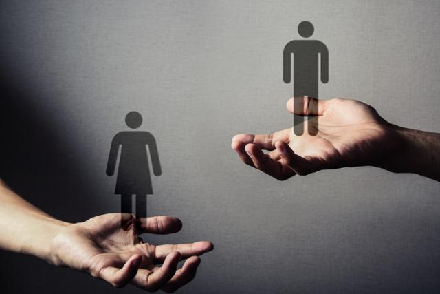

대한민국의 젠더 분쟁
이 문서는 주로 1987년에 대한민국 제6공화국이 성립된 이후의 젠더 이슈를 중심으로 일어났던 여러 논쟁과 관련 사건들을 다룬다.
대한민국의 젠더 갈등은 2015년 이전에도 존재하였지만 인터넷 커뮤니티와 오프라인 각지에서 소규모 수준에 불과했다. 그러나 2014년 5월 무한도전의 홍철아 장가가자 사태부터 시작된 2015 여성시대 대란 및 메갈리아-워마드의 탄생으로 페미니즘은 현실정치세력이 되며, 2015년 이후로는 젠더분쟁이 조금씩 확대되기 시작하더니 2018년 이후로는 젠더분쟁이 크게 확대되면서 정치적으로, 사회적으로 큰 이슈가 되었다. 이에 2015년 이후를 집중적으로 다룬다.